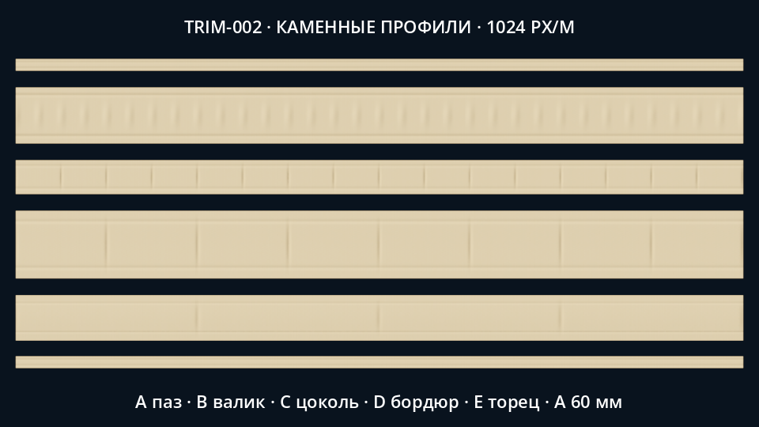
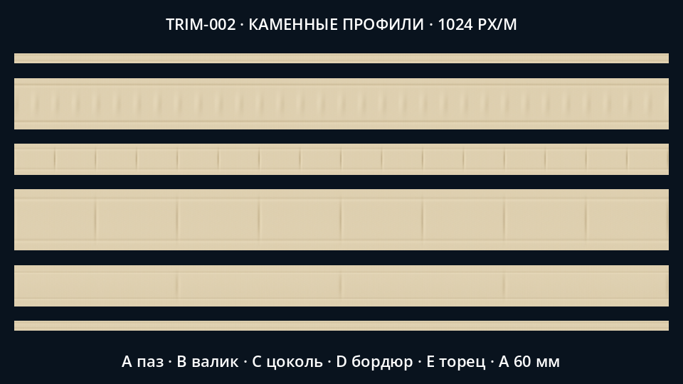
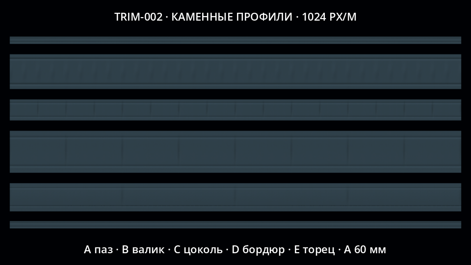
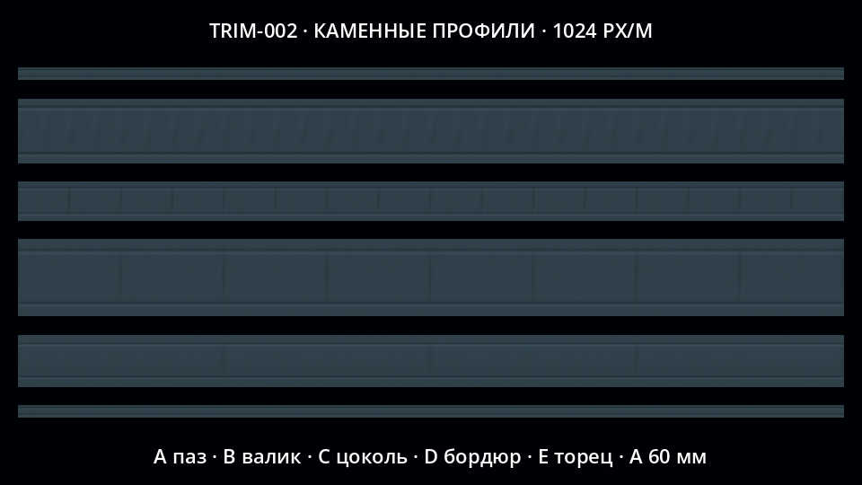
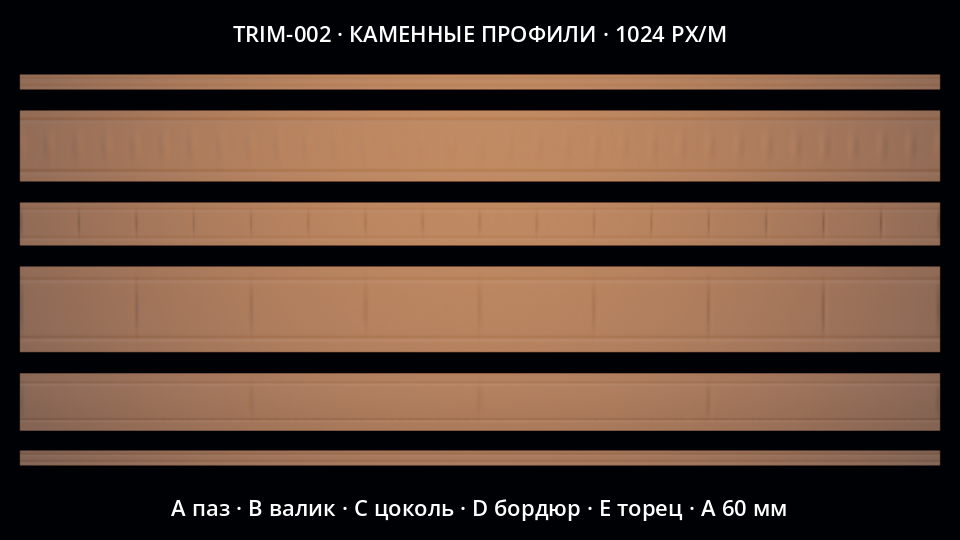
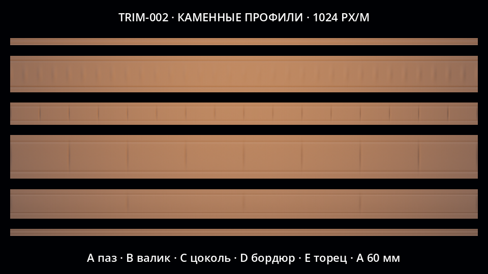
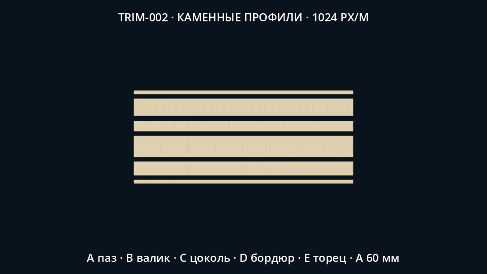
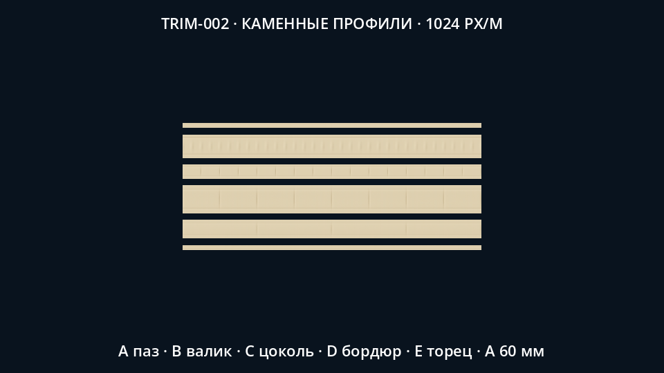

Пять регионов2K trim и шестая полоса60мм для первого carrier. Два повторения на4м,1024px/м. Только изолированные native-образцы; сценовые световые профили воспроизведены частично. Игровая UV-интеграция и финальная визуальная приемка остаются открытыми. PARTIAL.







